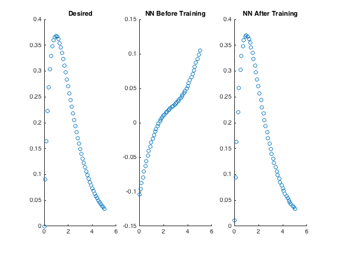

EE 509 Assignment #3
Neural Network Simulation
Tyler Mau
April 27, 2016
% Clear and Close Windows clear; close all; % Create Input/Output Pairs for Training p = rand(1, 500) * 20; t = zeros(1, 500); size_p = size(p); for i = 1:size_p(2) t(i) = p(i) * exp(-p(i)); end % Generate Test Input and Desired Output Data p_test = 0:5/50:5; t_desired = zeros(1, 50); size_p_test = size(p_test); for i = 1:size_p_test(2) t_desired(i) = p_test(i) * exp(-p_test(i)); end % Create Neural Network net = feedforwardnet(5); % Configure Neural Network net = configure(net, p, t); % Define Activation Functions net.layers{1}.transferFcn = 'tansig'; net.layers{2}.transferFcn = 'purelin'; % Initialize Weights and Biases with Random Numbers net.inputWeights{1,1}.initFcn = 'rands'; net.layerWeights{2,1}.initFcn = 'rands'; net.biases{1,1}.initFcn = 'rands'; net.biases{2,1}.initFcn = 'rands'; % Set Training Epochs and Desired Max Performance Error net.trainParam.epochs = 100; net.trainParam.goal = 1e-07; % Test Neural Network Before Training test_output_before = net(p_test); % Train Neural Network net = train(net, p, t); % Test Performance of Neural Network test_output_after = net(p_test); % Display Results figure(1), subplot(1,3,1), scatter(p_test, t_desired), title('Desired'), subplot(1,3,2), scatter(p_test, test_output_before), title('NN Before Training'), subplot(1,3,3), scatter(p_test, test_output_after), title('NN After Training');